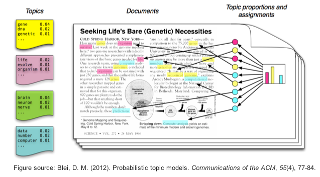
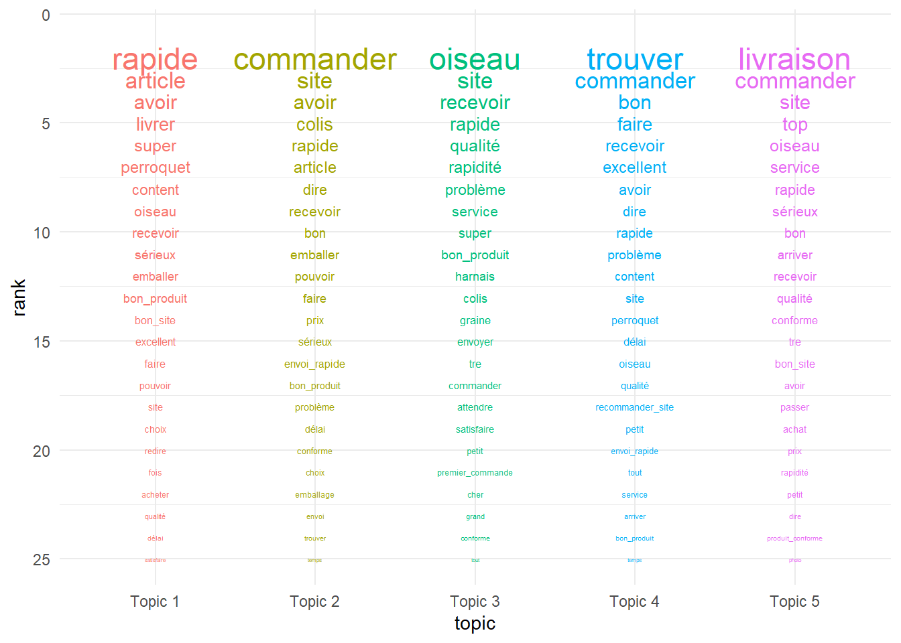
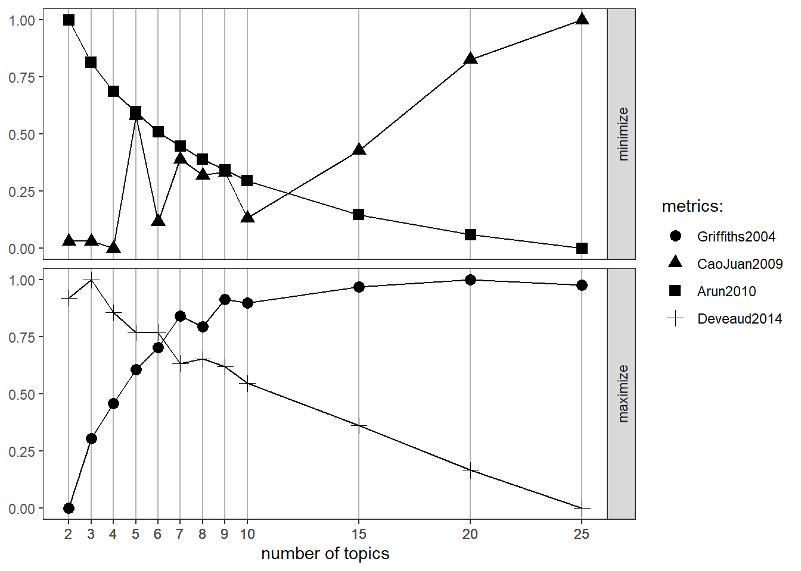
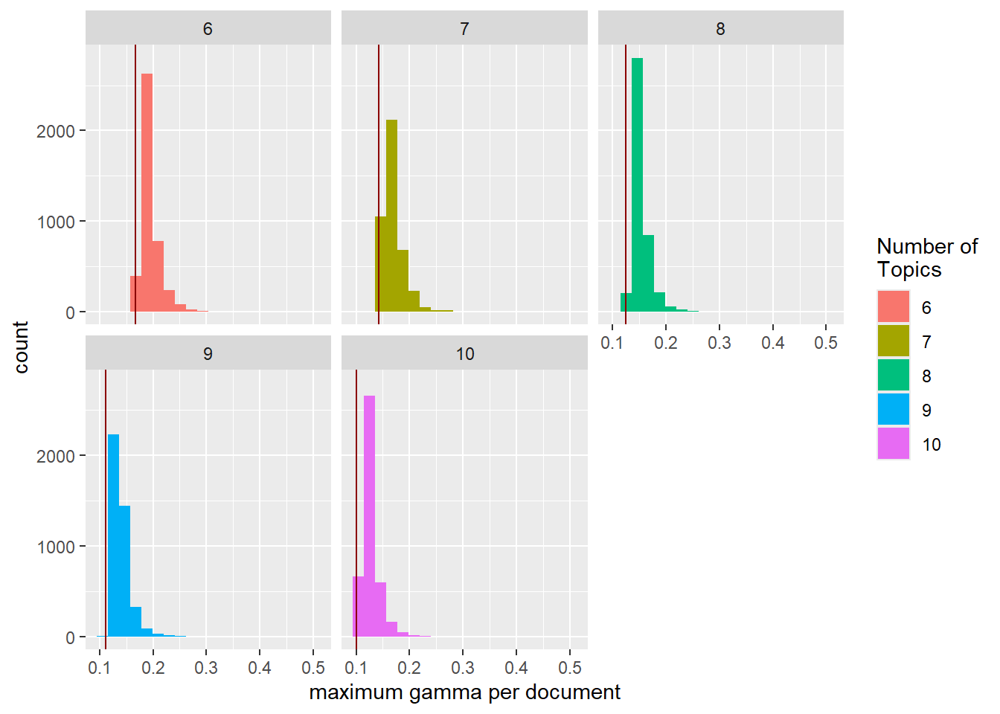
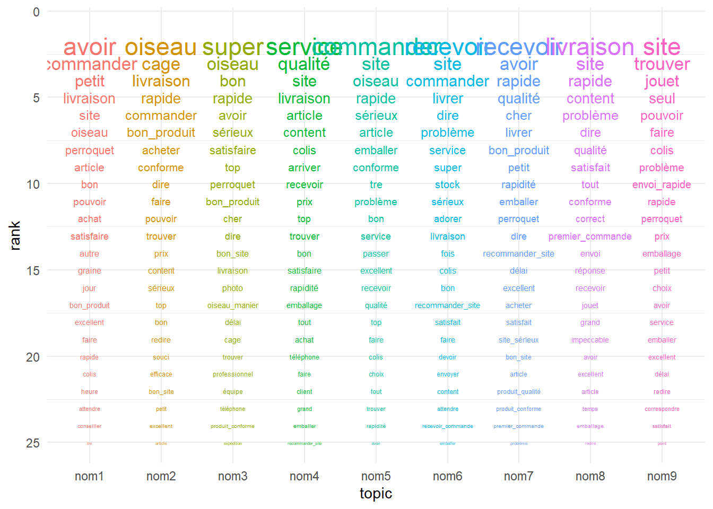
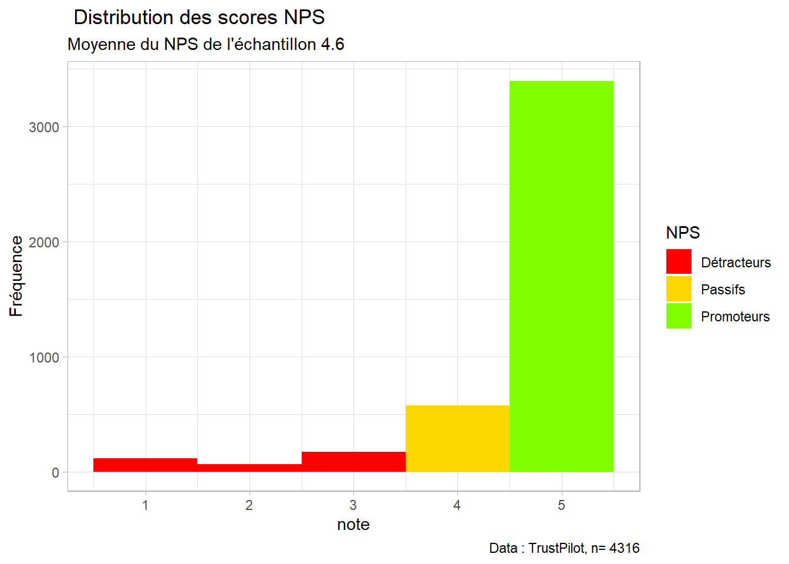
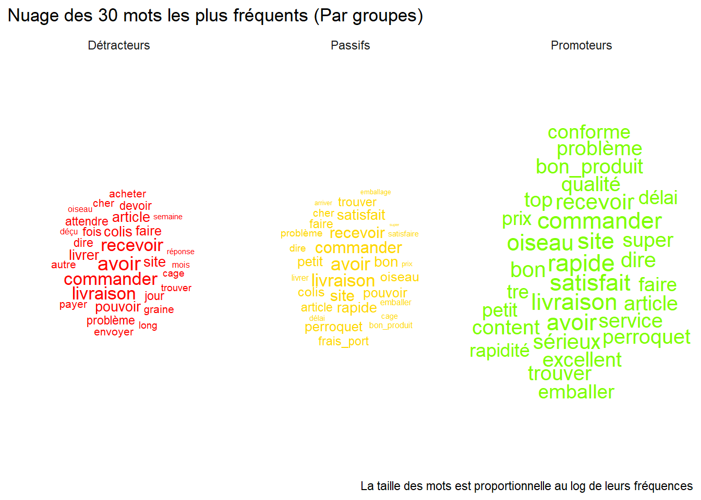
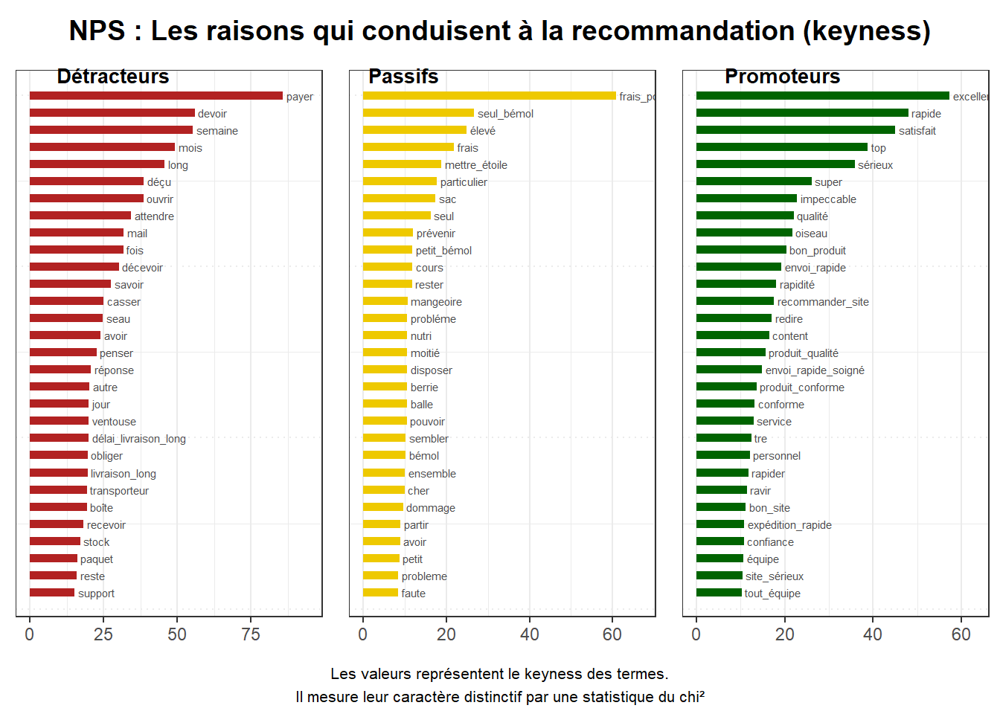
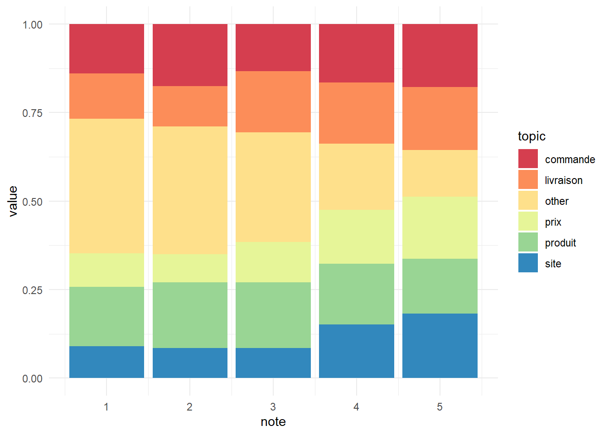

library(readxl)
library(tidyverse)
library(quanteda)
library(quanteda.textstats)
library(quanteda.textplots)
library(RColorBrewer)
library(topicmodels)
library(ggwordcloud)5 Topic Analysis
6 Les données
data <- read_csv("data/data_trustpilot_oiseaux.csv")Rows: 4388 Columns: 7
── Column specification ────────────────────────────────────────────────────────
Delimiter: ","
chr (4): auteur, date, month, comments
dbl (3): id, year, note
ℹ Use `spec()` to retrieve the full column specification for this data.
ℹ Specify the column types or set `show_col_types = FALSE` to quiet this message.7 Topics Analysis
On va maintenant s’intéresser à la détection et à l’analyse de topics. Il existe de nombreux algorithmes pour cela. On va en explorer un : le modèle LDA, pour Latent Dirichlet Allocation.
- Description du modèle LDA :
L’idée est la suivante : un corpus est considéré comme une collection de documents. Chaque document est considéré comme étant composé d’un mélange de topics. Chaque topic est considéré comme étant composé d’un mélange de tokens. L’algorithme calcule par itération les probabilités d’appartenance des tokens aux topics et des topics aux documents, ce qui nous permet de visualiser la composition des sujets identifiés.

7.1 Le modèle LDA avec topicmodels
On travaille à partir du dfm. On doit transformer le format des données afin de l’injecter dans le modèle. On réduit le nombre de termes considérés, ce qui permet de réduire les temps de calcul et de trouver une solution convergente.
corpus_oiseaux<-corpus(data, text_field = "comments")
tok<-tokens(corpus_oiseaux, remove_punct = TRUE, remove_numbers = TRUE, remove_symbols = TRUE)%>%
tokens_remove(stopwords("fr"))
dfm<-dfm(tok)
#On filtre les mots trop et trop peu fréquents
rem<-c("très","rapide","produit","livraison", "commande", "bien", "site", "a", "bon", "merci", "recommande","parfait")
news_dfm <- dfm %>%
dfm_remove(rem)%>%
dfm_trim(min_termfreq = 0.8, termfreq_type = "quantile", # 80% des mots les plus fréquents
max_docfreq = 0.2, docfreq_type = "prop") #qui apparaissent dans max 20% des documents
#On supprime les entrées vides
news_dfm <- news_dfm[ntoken(news_dfm) > 0,]
#On transforme en dtm, un format compris par le package topicsmodel
dtm <- convert(news_dfm, to = "topicmodels")
#On lance le modèle
lda <- LDA(dtm, k = 5)
#On regarde les résultats
terms(lda,10) Topic 1 Topic 2 Topic 3 Topic 4 Topic 5
[1,] "bonne" "produits" "produits" "colis" "qualité"
[2,] "produits" "qualité" "prix" "qualité" "j'ai"
[3,] "rien" "tout" "tout" "rapidement" "oiseaux"
[4,] "colis" "reçu" "plus" "conforme" "mania"
[5,] "j'ai" "toujours" "conforme" "mania" "service"
[6,] "rapidement" "plus" "service" "produits" "c'est"
[7,] "super" "j'ai" "tres" "oiseaux" "sérieux"
[8,] "oiseaux" "service" "reçu" "top" "choix"
[9,] "tres" "c'est" "super" "toujours" "peu"
[10,] "frais" "super" "satisfaite" "dire" "chez" # topics(lda)
corpus_oiseaux["text996"]Corpus consisting of 1 document and 6 docvars.
text996 :
"Seconde commande, satisfaction totale, expédition très rapid..."corpus_oiseaux["text995"]Corpus consisting of 1 document and 6 docvars.
text995 :
"Très bon produit. Livraison rapide et sérieux je recommande ..."corpus_oiseaux["text999"]Corpus consisting of 1 document and 6 docvars.
text999 :
"Très bon magasin emballage dans les normes on y trouve de to..."7.2 Topic Analysis à partir de l’annotation des part of speech
Les résultats du modèle LDA sont très dépendants de la qualité du vocabulaire injecté. Plus on travaille ce vocabulaire, meilleurs sont les résultats. On va donc reprendre tout ce qu’on a fait jusqu’à présent pour améliorer les résultats de notre modèle : on récupère les annotations ; on filtre le vocabulaire pour ne garder que les noms, adjectifs et verbes ; on crée les collocations ; on filtre les occurrences trop et pas assez fréquentes.
ann_token<-read_rds("data/annotation_oiseaux.rds")
data<-ann_token%>%
filter(upos=="NOUN"|upos=="VERB"|upos=="ADJ")%>%
group_by(doc_id)%>%
summarise(text=paste(lemma,collapse = " "))%>%
inner_join(data, join_by("doc_id"=="id"))
corpus_new<-corpus(data, text_field = "text")
toks<-tokens(corpus_new)%>%
tokens_replace(c("produire", "conformer","colir"), c("produit", "conforme","colis"))%>%
tokens_remove(c(".",","))
colloc<-textstat_collocations(toks, min_count = 10, tolower = TRUE)
toks<-tokens_compound(toks, pattern = colloc[colloc$z>7,])
dfm_new<-dfm(toks)%>%
dfm_trim(min_termfreq = 0.6, termfreq_type = "quantile",
max_docfreq = 0.1, docfreq_type = "prop")
dtm_new <- convert(dfm_new, to = "topicmodels")
set.seed(1234)
lda <- LDA(dtm_new, k = 5)
term<-as_tibble(terms(lda,25))%>%
mutate(rank=as.numeric(row.names(.)))%>%
pivot_longer(-rank, names_to = "topic",values_to = "term")
ggplot(term, aes(x=topic, y= rank, group = term , label = term)) +
scale_y_reverse() +
geom_text(aes(color=topic,size=8/log(rank)))+
theme_minimal()+
scale_color_hue()+
guides(color="none",size="none")
7.3 Déterminer le nombre de topics optimal
Le modèle LDA fonctionne à partir d’un nombre de topics donné. La question est donc de savoir quel est le nombre de topics optimal pour décrire notre corpus. Heureusement, des personnes ont créé des fonctions et des procédures pour nous aider dans cette quête. L’idée est de calculer différents modèles pour différents nombres de topics, et de comparer la qualité des résultats. La procédure ci-dessous est en deux parties :
Tout d’abord, on compare la qualité de différents indicateurs sur un grand nombre de modèles, pour aboutir à une liste de quelques solutions à comparer plus en détail (de 3 à 10).
Ensuite, on compare les résultats de la liste réduite de modèles, pour déterminer lequel a la meilleure distribution des topics entre les documents. La distribution recherchée est celle qui distingue le plus les documents en fonction des topics, tout en étant à droite de l’estimation d’une répartition uniforme des documents entre les topics. Le critère de parcimonie nous invite à choisir la solution avec le moins grand nombre de topics, en cas de résultats comparables.
##Etape 1 : les meilleures solutions
library(ldatuning)
library(magrittr)
Attachement du package : 'magrittr'L'objet suivant est masqué depuis 'package:purrr':
set_namesL'objet suivant est masqué depuis 'package:tidyr':
extractresult <- FindTopicsNumber(dtm_new,
topics = c(seq(from = 2, to = 9, by = 1), seq(10, 25, 5)),
metrics = c("Griffiths2004", "CaoJuan2009", "Arun2010", "Deveaud2014"),
method = "Gibbs",
control = list(seed = 0:4,
nstart = 5,
best = TRUE),
mc.cores = 4L,
verbose = TRUE
)fit models... done.
calculate metrics:
Griffiths2004... done.
CaoJuan2009... done.
Arun2010... done.
Deveaud2014... done.FindTopicsNumber_plot(result)Warning: The `<scale>` argument of `guides()` cannot be `FALSE`. Use "none" instead as
of ggplot2 3.3.4.
ℹ The deprecated feature was likely used in the ldatuning package.
Please report the issue at <https://github.com/nikita-moor/ldatuning/issues>.
##Etape 2 : comparaison des solutions
para <- tibble(k = c(6,7,8,9,10))
lemma_tm <- para %>%
mutate(lda = map(k,
function(k) LDA(
k=k,
x=dtm_new,
method="Gibbs",
control=list(seed = 0:4,
nstart = 5,
best = TRUE)
)
)
)
lemma_tm <- lemma_tm %>%
mutate(lda_gamma = map(.x=lda,
.f=tidytext::tidy,
matrix="gamma"))
lemma_tm %>%
unnest(lda_gamma) %>%
group_by(k, document) %>%
arrange(desc(gamma)) %>%
slice(1) %>%
ungroup() %>%
ggplot(aes(x=gamma, fill=factor(k))) +
geom_histogram(bins = 20) +
scale_fill_discrete(name = "Number of\nTopics") +
xlab("maximum gamma per document") +
facet_wrap(~k) +
geom_vline(aes(xintercept = 1/k),
tibble(k=lemma_tm %$% unique(k)),
color="darkred")
7.4 Représentation graphique
À partir de la solution retenue aux étapes précédentes, on va représenter les différents topics :
set.seed(1234) #pour la réplicabilité des résultats
lda <- LDA(dtm_new, k = 9)
lda_res<-as.data.frame(terms(lda, 25))%>%
rename(nom1='Topic 1',nom2='Topic 2', nom3='Topic 3', nom4='Topic 4', nom5='Topic 5',nom6='Topic 6',nom7='Topic 7', nom8='Topic 8', nom9='Topic 9')%>%
mutate(rank=as.numeric(row.names(.)))%>%
pivot_longer(-rank, names_to = "topic", values_to = "term")
ggplot(lda_res, aes(x=topic, y= rank, group = term , label = term)) +
scale_y_reverse() +
geom_text(aes(color=topic,size=8/log(rank)))+
theme_minimal()+
scale_color_hue()+
guides(color=FALSE,size=FALSE)
8 Theory-Driven LDA
Ici, on va forcer les topics grâce à la réalisation d’un dictionnaire. C’est utile quand on cherche à appliquer une théorie qui nous dit ce que l’on cherche à trouver. Par exemple, ici on s’intéresse aux attributs clés des logements oiseaux. Dans d’autre cas, on pourra chercher à expliquer les notes en fonction de topics qui reflètent les attributs clés. On peut réaliser le dictionnaire a priori ou après différentes analyses de topics, de co-occurences, de fréquence, etc.
On commence par créer un dictionnaire.
dict<-dictionary(list(produit=c("produit*", "cage","oiseau","graine*"),
livraison=c("livr*","recepti*","délai"),
commande=c("command*","emballage","envoi*"),
site="*site*",
prix=c("*prix*","frais_port")
))
dictDictionary object with 5 key entries.
- [produit]:
- produit*, cage, oiseau, graine*
- [livraison]:
- livr*, recepti*, délai
- [commande]:
- command*, emballage, envoi*
- [site]:
- *site*
- [prix]:
- *prix*, frais_porthead(dfm_lookup(dfm_new,dict))Document-feature matrix of: 6 documents, 5 features (73.33% sparse) and 6 docvars.
features
docs produit livraison commande site prix
1 0 0 0 0 0
2 0 2 1 0 0
3 2 1 0 0 0
4 0 0 1 0 0
5 0 1 0 0 0
6 0 1 0 1 0On utilise ensuite le package ‘seededlda’ pour lancer le modèle semi-supervisé.
library(seededlda)Le chargement a nécessité le package : proxyC
Attachement du package : 'proxyC'L'objet suivant est masqué depuis 'package:stats':
dist
Attachement du package : 'seededlda'Les objets suivants sont masqués depuis 'package:topicmodels':
terms, topicsL'objet suivant est masqué depuis 'package:stats':
termsset.seed(1234)
slda<-textmodel_seededlda(dfm_new, dict, residual = T)
terms(slda,20) produit livraison
[1,] "oiseau" "livraison"
[2,] "cage" "livrer"
[3,] "graine" "délai"
[4,] "perroquet" "dire"
[5,] "produit_qualité" "bon_produit"
[6,] "produit_conforme" "satisfaire"
[7,] "avoir" "problème"
[8,] "content" "satisfait"
[9,] "trouver" "service"
[10,] "petit" "bon"
[11,] "jouet" "top"
[12,] "acheter" "livraison_rapide_produit"
[13,] "harnais" "livraison_rapide_recommander"
[14,] "perruche" "temps"
[15,] "produit_bon_qualité" "cher"
[16,] "grand" "impeccable"
[17,] "produit_conforme_description" "emballer"
[18,] "tout" "livreur"
[19,] "passer" "livraison_temps"
[20,] "arriver" "correct"
commande site prix
[1,] "commander" "site" "prix"
[2,] "recevoir" "rapide" "bon"
[3,] "envoi_rapide" "bon_site" "excellent"
[4,] "emballage" "recommander_site" "qualité"
[5,] "envoi" "sérieux" "service"
[6,] "satisfait" "site_sérieux" "frais_port"
[7,] "article" "tre" "top"
[8,] "conforme" "satisfait" "article"
[9,] "commande_recevoir" "siter" "magasin"
[10,] "emballer" "redire" "prix_raisonnable"
[11,] "envoi_rapide_soigné" "rapider" "satisfait"
[12,] "commande_arriver" "premier_commande" "professionnel"
[13,] "commande_passer" "super_site" "super"
[14,] "correspondre" "super" "équipe"
[15,] "problème" "choix" "réactif"
[16,] "content" "autre_site" "téléphone"
[17,] "commande_livrer" "conseiller" "bon_rapport_qualité_prix"
[18,] "rapidité" "bon_produit" "prix_correct"
[19,] "rapide" "achat" "trouver"
[20,] "envoie" "hésiter" "expédition_rapide"
other
[1,] "avoir"
[2,] "faire"
[3,] "colis"
[4,] "pouvoir"
[5,] "jour"
[6,] "fois"
[7,] "recevoir"
[8,] "attendre"
[9,] "dire"
[10,] "autre"
[11,] "aller"
[12,] "part"
[13,] "être"
[14,] "petit"
[15,] "devoir"
[16,] "problème"
[17,] "mettre"
[18,] "attente"
[19,] "voir"
[20,] "mail" 9 Expliquer les notes
Dans cette dernière partie, nous allons nous intéresser aux notes et tenter de les expliquer à l’aide de l’analyse de topics.
9.1 NPS
Dans un premier temps, nous allons regarder le Net Promoter Score (NPS), puis nous étudierons les discours des promoteurs, détracteurs et passifs.
Tout d’abord, nous créons nos catégories en fonction des notes.
col<- c("red","gold", "chartreuse")
data<-data %>%
mutate(NPS=case_when(note<4~"Détracteurs",
note==4~"Passifs",
note>4~"Promoteurs"))
ggplot(data, aes(x=note))+
geom_histogram(binwidth = 1, aes(fill=NPS))+
labs( title= " Distribution des scores NPS",
subtitle = paste("Moyenne du NPS de l'échantillon",round(mean(data$note),1)),
caption = paste("Data : TrustPilot, n=",nrow(data)),
y = "Fréquence")+
scale_fill_manual(values=col)+
theme_light()
Puis nous réalisons un nuage de mots pour chaque groupe, afin d’avoir une idée de ce qui est exprimé.
dfm_new$NPS<-data$NPS
# docvars(toks)
dfm_gp <-dfm_new %>%
dfm_group(groups = NPS)
# dfm_gp
stat<- dfm_gp %>%
textstat_frequency(n = 30, groups = NPS)
stat feature frequency rank docfreq group
1 avoir 103 1 1 Détracteurs
2 commander 81 2 1 Détracteurs
3 recevoir 79 3 1 Détracteurs
4 livraison 77 4 1 Détracteurs
5 colis 41 5 1 Détracteurs
6 site 40 6 1 Détracteurs
7 pouvoir 38 7 1 Détracteurs
8 article 38 7 1 Détracteurs
9 livrer 37 9 1 Détracteurs
10 faire 34 10 1 Détracteurs
11 fois 31 11 1 Détracteurs
12 problème 28 12 1 Détracteurs
13 dire 28 12 1 Détracteurs
14 attendre 28 12 1 Détracteurs
15 jour 28 12 1 Détracteurs
16 devoir 28 12 1 Détracteurs
17 cher 26 17 1 Détracteurs
18 graine 26 17 1 Détracteurs
19 autre 25 19 1 Détracteurs
20 envoyer 25 19 1 Détracteurs
21 payer 25 19 1 Détracteurs
22 acheter 25 19 1 Détracteurs
23 trouver 23 23 1 Détracteurs
24 cage 23 23 1 Détracteurs
25 long 23 23 1 Détracteurs
26 oiseau 21 26 1 Détracteurs
27 déçu 21 26 1 Détracteurs
28 mois 21 26 1 Détracteurs
29 réponse 20 29 1 Détracteurs
30 semaine 20 29 1 Détracteurs
31 avoir 85 1 1 Passifs
32 livraison 78 2 1 Passifs
33 commander 56 3 1 Passifs
34 site 53 4 1 Passifs
35 recevoir 50 5 1 Passifs
36 rapide 42 6 1 Passifs
37 satisfait 41 7 1 Passifs
38 bon 40 8 1 Passifs
39 petit 35 9 1 Passifs
40 pouvoir 34 10 1 Passifs
41 perroquet 34 10 1 Passifs
42 colis 33 12 1 Passifs
43 oiseau 32 13 1 Passifs
44 trouver 30 14 1 Passifs
45 faire 29 15 1 Passifs
46 article 28 16 1 Passifs
47 frais_port 28 16 1 Passifs
48 cher 26 18 1 Passifs
49 problème 23 19 1 Passifs
50 dire 23 19 1 Passifs
51 bon_produit 21 21 1 Passifs
52 livrer 21 21 1 Passifs
53 emballer 21 21 1 Passifs
54 délai 20 24 1 Passifs
55 satisfaire 20 24 1 Passifs
56 cage 20 24 1 Passifs
57 arriver 19 27 1 Passifs
58 prix 19 27 1 Passifs
59 emballage 19 27 1 Passifs
60 super 18 30 1 Passifs
61 rapide 295 1 1 Promoteurs
62 satisfait 284 2 1 Promoteurs
63 site 279 3 1 Promoteurs
64 livraison 275 4 1 Promoteurs
65 commander 269 5 1 Promoteurs
66 oiseau 228 6 1 Promoteurs
67 avoir 222 7 1 Promoteurs
68 recevoir 186 8 1 Promoteurs
69 bon 173 9 1 Promoteurs
70 sérieux 157 10 1 Promoteurs
71 dire 150 11 1 Promoteurs
72 qualité 146 12 1 Promoteurs
73 service 143 13 1 Promoteurs
74 top 141 14 1 Promoteurs
75 bon_produit 138 15 1 Promoteurs
76 excellent 138 15 1 Promoteurs
77 article 134 17 1 Promoteurs
78 super 133 18 1 Promoteurs
79 content 127 19 1 Promoteurs
80 perroquet 122 20 1 Promoteurs
81 trouver 119 21 1 Promoteurs
82 problème 117 22 1 Promoteurs
83 faire 111 23 1 Promoteurs
84 emballer 111 23 1 Promoteurs
85 conforme 108 25 1 Promoteurs
86 prix 99 26 1 Promoteurs
87 tre 93 27 1 Promoteurs
88 délai 92 28 1 Promoteurs
89 petit 92 28 1 Promoteurs
90 rapidité 88 30 1 Promoteursggplot(stat, aes(label = feature)) +
geom_text_wordcloud(aes(size=log(frequency), color=group)) +
theme_minimal()+
facet_wrap(vars(group))+
scale_color_manual(values=col)+
labs(title="Nuage des 30 mots les plus fréquents (Par groupes)",
caption = "La taille des mots est proportionnelle au log de leurs fréquences")
Maintenant, nous nous intéressons à ce qui caractérise chacun des groupes par rapport aux autres, grâce à la mesure du keyness.
graph_promoteur<-textstat_keyness(dfm_gp, target = "Promoteurs")%>%
textplot_keyness(n = 30L, labelsize = 2, show_legend = FALSE,
show_reference = FALSE, color = c("Darkgreen", "gray"))+
labs(x=NULL)
graph_detracteur <- textstat_keyness(dfm_gp, target = "Détracteurs" )%>%
textplot_keyness(n = 30L, labelsize = 2, show_legend = FALSE,
show_reference = FALSE, color = c("firebrick", "gray"))+
labs(x=NULL)
graph_passif <- textstat_keyness(dfm_gp, target = "Passifs")%>%
textplot_keyness(n = 30L, labelsize = 2, show_legend = FALSE, show_reference = FALSE, color = c("gold2", "gray"))+
labs(x=NULL)
library(cowplot)
Attachement du package : 'cowplot'L'objet suivant est masqué depuis 'package:lubridate':
stampp<- plot_grid(graph_detracteur, graph_passif ,graph_promoteur, labels = c('Détracteurs', 'Passifs', 'Promoteurs'), label_size = 10, ncol=3)
title <- ggdraw() + draw_label("NPS : Les raisons qui conduisent à la recommandation (keyness)", fontface='bold')
note <- ggdraw()+ draw_text("Les valeurs représentent le keyness des termes.\nIl mesure leur caractère distinctif par une statistique du chi²", size=8,x = 0.5, y = 0.5)
plot_grid(title, p,note, ncol=1, rel_heights=c(0.1, 1)) # rel_heights values control title margins
9.2 En fonction des topics
Maintenant, nous cherchons à voir la répartition des topics dans les notes, pour comprendre si certains topics contribuent plus ou moins à la satisfaction.
theta<-as.data.frame(slda$theta)%>%mutate(doc_id=as.numeric(row.names(.)))
data<-inner_join(data, theta)Joining with `by = join_by(doc_id)`foo<-data%>%select(note, produit, livraison, commande, site,prix, other)%>%
pivot_longer(-note, names_to = "topic", values_to = "value")
ggplot(foo,aes(x=note, y=value, group=topic))+
geom_bar(position="fill",stat="identity", aes(fill=topic))+
scale_fill_brewer(palette="Spectral")+
theme_minimal()
#Pour finir, une petite régression !
fit<-lm(note~produit+livraison+commande+site+prix, data =data)
summary(fit)
Call:
lm(formula = note ~ produit + livraison + commande + site + prix,
data = data)
Residuals:
Min 1Q Median 3Q Max
-4.1270 -0.0206 0.1766 0.3033 1.9858
Coefficients:
Estimate Std. Error t value Pr(>|t|)
(Intercept) 2.51256 0.07178 35.01 <2e-16 ***
produit 1.92260 0.11146 17.25 <2e-16 ***
livraison 2.45543 0.10907 22.51 <2e-16 ***
commande 2.44823 0.10885 22.49 <2e-16 ***
site 2.95498 0.10736 27.52 <2e-16 ***
prix 2.79509 0.10718 26.08 <2e-16 ***
---
Signif. codes: 0 '***' 0.001 '**' 0.01 '*' 0.05 '.' 0.1 ' ' 1
Residual standard error: 0.7591 on 4310 degrees of freedom
Multiple R-squared: 0.1952, Adjusted R-squared: 0.1942
F-statistic: 209 on 5 and 4310 DF, p-value: < 2.2e-16